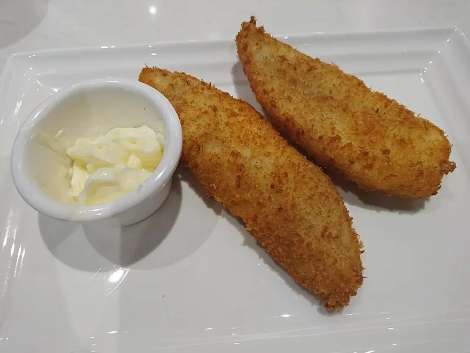

Фото: Ceeseven, CC BY-SA 4.0

Минтай в кляре
Кусочки минтая в пышном яичном кляре, жаренные на сковороде
30 мин4 порц.366 ккал на порциюБ 30 · Ж 20 · У 15Русская кухня
Продукты на 4 порц.
- Минтай600 г
- Яйцо куриное2 шт
- Мука пшеничная4 ст. л.
- Молоко0,5 стак.
- Растительное масло4 ст. л.
- Соль1 ч. л.
- Перец чёрный молотый1 щеп.
- Лимон по желанию0,5 шт
Как готовить
- Филе минтая разморозьте, обсушите и нарежьте кусками 5-6 см. Посолите, поперчите, сбрызните лимонным соком.
- Для кляра взбейте вилкой яйца с молоком и щепоткой соли, затем постепенно вмешайте муку до консистенции густой сметаны, без комков.
- Разогрейте масло на сковороде на среднем огне. Капля кляра должна сразу зашипеть.
- Обмакните каждый кусок рыбы в кляр и выложите на сковороду.
- Жарьте по 3-4 минуты с каждой стороны до золотистой корочки.
- Выложите на бумажное полотенце, чтобы ушло лишнее масло. Рыба внутри белая и слоится.
Совет. Рыбу перед кляром обязательно обсушите полотенцем, иначе кляр сползёт с мокрой поверхности при жарке.